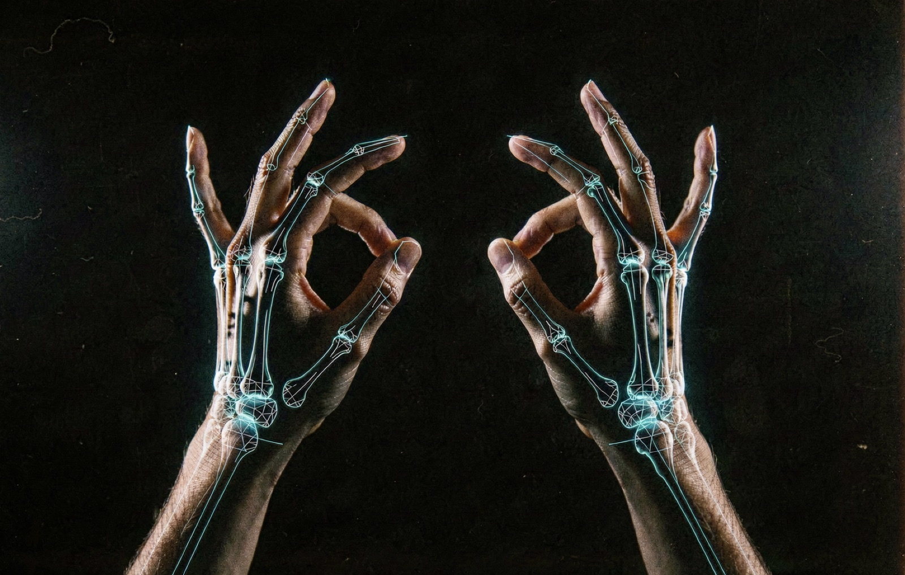
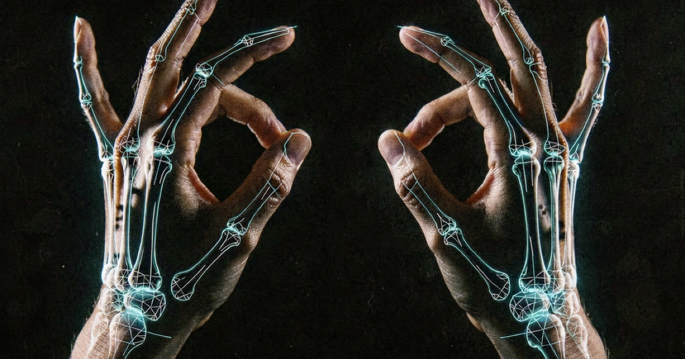

Turn any Mac webcam into a theremin: one hand picks pitch, the other rides volume, a pinch plays the note.

No gloves, no rings, no hardware between you and the sound. Sleight publishes a standard CoreMIDI source named Sleight, so it plugs into Logic, Ableton, MainStage, or anything else that speaks MIDI.
Move your hand across the frame to slide along a two-octave scale. Pitch bends continuously, like a real theremin's finger.
Raise it toward the top of the frame and the sound swells. Drop it and the instrument fades to silence.
Touch thumb to index finger to open a note; let go to release. The tighter you snap, the harder it hits.
Vibrato, a minor pentatonic default scale, and velocity from pinch tightness. It sounds musical even when you improvise.
Apple's Vision framework does the hand tracking on the Neural Engine at display frame rates. A One-Euro filter smooths the control signals so pitch glides instead of jittering. Nothing leaves your machine: no account, no cloud, no telemetry.

Sleight shows up in your DAW as a plain MIDI input. Route it to a synth in Logic, a pad in Ableton, or your own instrument. Practice mode keeps MIDI silent while you learn the gestures, and the built-in test synth lets you hear it without opening a DAW at all.
Download the disk image, drag Sleight to Applications, and raise a hand. Signed and notarized, so Gatekeeper stays happy.